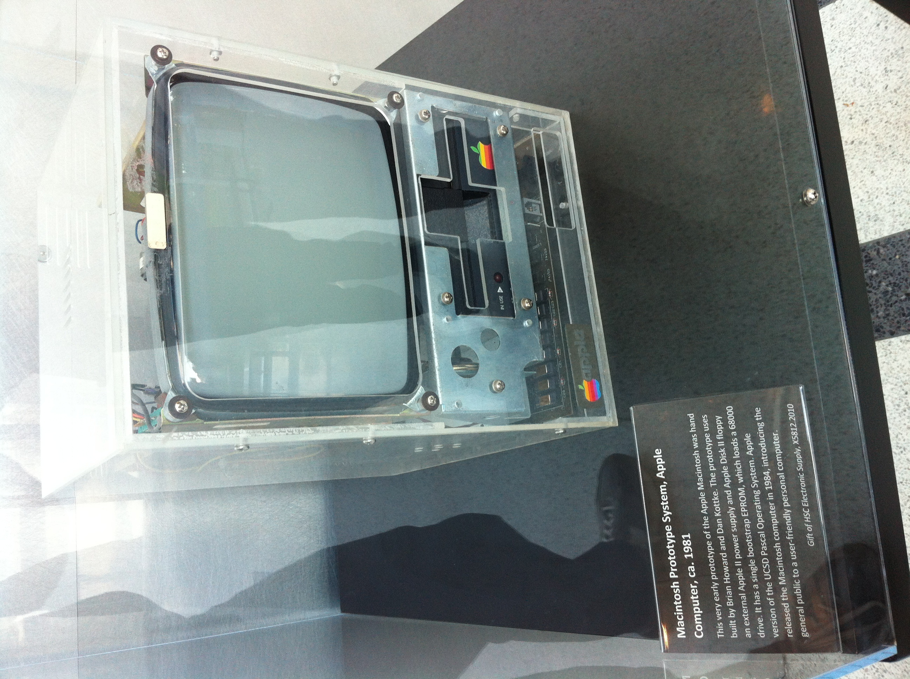
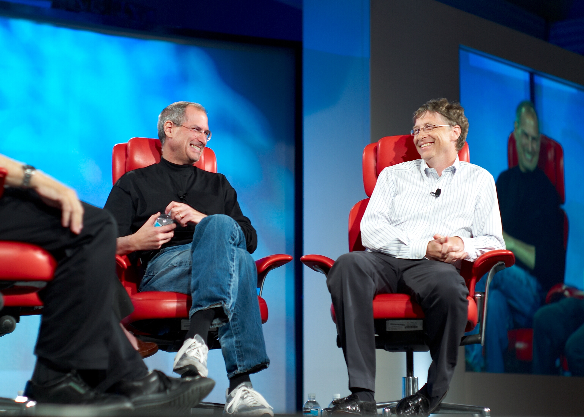
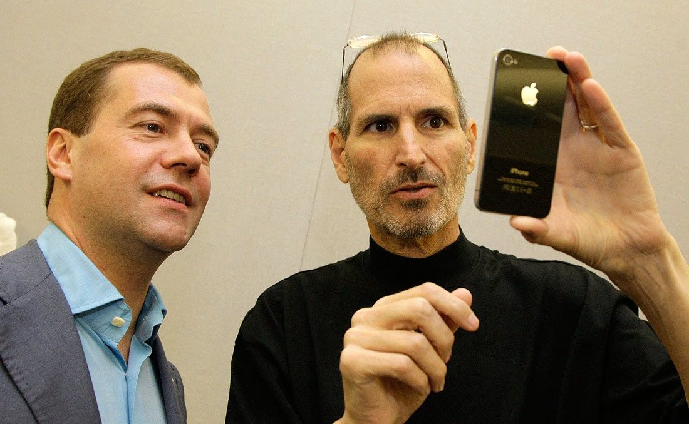

| Main | Quotes | Gallery | About |
|---|
In February 1974, Jobs returned to his parents' home in Los Altos and began looking for a job. He was soon hired by Atari, Inc. in Los Gatos, California, which gave him a job as a technician. Back in 1973, Steve Wozniak designed his own version of the classic video game Pong and gave the board to Jobs. According to Wozniak, Atari only hired Jobs because he took the board down to the company, and they thought that he had built it himself. Atari's cofounder Nolan Bushnell later described him as "difficult but valuable", pointing out that "he was very often the smartest guy in the room, and he would let people know that."
During this period, Jobs and Brennan remained involved with each other while continuing to see other people. By early 1974, Jobs was living what Brennan describes as a "simple life" in a Los Gatos cabin, working at Atari, and saving money for his impending trip to India.
Jobs traveled to India in mid-1974 to visit Neem Karoli Baba at his Kainchi ashram with his Reed friend (and eventual Apple employee) Daniel Kottke, in search of spiritual enlightenment. When they got to the Neem Karoli ashram, it was almost deserted because Neem Karoli Baba had died in September 1973. Then they made a long trek up a dry riverbed to an ashram of Haidakhan Babaji.
After seven months, Jobs left India and returned to the US ahead of Daniel Kottke. Jobs had changed his appearance; his head was shaved and he wore traditional Indian clothing. During this time, Jobs experimented with psychedelics, later calling his LSD experiences "one of the two or three most important things [he had] done in [his] life". He spent a period at the All One Farm, a commune in Oregon that was owned by Robert Friedland. Brennan joined him there for a period.
During this time period, Jobs and Brennan both became practitioners of Zen Buddhism through the Zen master Kōbun Chino Otogawa. Jobs was living in his parents' backyard toolshed, which he had converted into a bedroom. Jobs engaged in lengthy meditation retreats at the Tassajara Zen Mountain Center, the oldest Sōtō Zen monastery in the US. He considered taking up monastic residence at Eihei-ji in Japan, and maintained a lifelong appreciation for Zen.
In mid-1975, after returning to Atari, Jobs was assigned to create a circuit board for the arcade video game Breakout. According to Bushnell, Atari offered US$100 for each TTL chip that was eliminated in the machine. Jobs had little specialized knowledge of circuit board design and made a deal with Wozniak to split the fee evenly between them if Wozniak could minimize the number of chips. Much to the amazement of Atari engineers, Wozniak reduced the TTL count to 46, a design so tight that it was impossible to reproduce on an assembly line. According to Wozniak, Jobs told him that Atari gave them only $700 (instead of the $5,000 paid out), and that Wozniak's share was thus $350. Wozniak did not learn about the actual bonus until ten years later, but said that if Jobs had told him about it and explained that he needed the money, Wozniak would have given it to him.
Jobs and Wozniak attended meetings of the Homebrew Computer Club in 1975, which was a stepping stone to the development and marketing of the first Apple computer.

By March 1976, Wozniak completed the basic design of the Apple I computer and showed it to Jobs, who suggested that they sell it; Wozniak was at first skeptical of the idea but later agreed. In April of that same year, Jobs, Wozniak, and administrative overseer Ronald Wayne founded Apple Computer Company (now called Apple Inc.) as a business partnership in Jobs's parents' Crist Drive home on April 1, 1976. The operation originally started in Jobs's bedroom and later moved to the garage. Wayne stayed only a short time, leaving Jobs and Wozniak as the active primary cofounders of the company. The two decided on the name "Apple" after Jobs returned from the All One Farm commune in Oregon and told Wozniak about his time spent in the farm's apple orchard. Jobs originally planned to produce bare printed circuit boards of the Apple I and sell them to computer hobbyists for $50 each. To raise the money they needed to build the first batch of the circuit boards, Wozniak sold his HP scientific calculator and Jobs sold his Volkswagen van. Later that year, computer retailer Paul Terrell purchased 50 fully assembled units of the Apple I from them for $500 each. Eventually about 200 Apple I computers were produced in total.
A neighbor on Crist Drive recalled Jobs as an odd individual who would greet his clients "with his underwear hanging out, barefoot and hippie-like". Another neighbor, Larry Waterland, who had just earned his PhD in chemical engineering at Stanford, recalled dismissing Jobs's budding business: "'You punched cards, put them in a big deck,' he said about the mainframe machines of that time. 'Steve took me over to the garage. He had a circuit board with a chip on it, a DuMont TV set, a Panasonic cassette tape deck and a keyboard. He said, 'This is an Apple computer.' I said, 'You've got to be joking.' I dismissed the whole idea.'" Jobs's friend from Reed College and India, Daniel Kottke, recalled that as an early Apple employee, he "was the only person who worked in the garage ... Woz would show up once a week with his latest code. Steve Jobs didn't get his hands dirty in that sense." Kottke also stated that much of the early work took place in Jobs's kitchen, where he spent hours on the phone trying to find investors for the company.
They received funding from a then-semi-retired Intel product marketing manager and engineer Mike Markkula. Scott McNealy, one of the cofounders of Sun Microsystems, said that Jobs broke a "glass age ceiling" in Silicon Valley because he'd created a very successful company at a young age. Markkula brought Apple to the attention of Arthur Rock, which after looking at the crowded Apple booth at the Home Brew Computer Show, started with a $60,000 investment and went on the Apple board. Jobs was not pleased when Markkula recruited Mike Scott from National Semiconductor in February 1977 to serve as the first president and CEO of Apple.
After Brennan returned from her own journey to India, she and Jobs fell in love again, as Brennan noted changes in him that she attributes to Kobun (whom she was also still following). It was also at this time that Jobs displayed a prototype Apple I computer for Brennan and his parents in their living room. Brennan notes a shift in this time period, where the two main influences on Jobs were Apple Inc. and Kobun. By early 1977, she and Jobs would spend time together at her home at Duveneck Ranch in Los Altos, which served as a hostel and environmental education center.
In April 1977, Jobs and Wozniak introduced the Apple II at the West Coast Computer Faire. It is the first consumer product to have been sold by Apple Computer. Primarily designed by Wozniak, Jobs oversaw the development of its unusual case and Rod Holt developed the unique power supply. During the design stage, Jobs argued that the Apple II should have two expansion slots, while Wozniak wanted eight. After a heated argument, Wozniak threatened that Jobs should "go get himself another computer". They later decided to go with eight slots. The Apple II became one of the first highly successful mass-produced microcomputer products in the world.
As Jobs became more successful with his new company, his relationship with Brennan grew more complex. In 1977, the success of Apple was now a part of their relationship, and Brennan, Daniel Kottke, and Jobs moved into a house near the Apple office in Cupertino. Brennan eventually took a position in the shipping department at Apple. Brennan's relationship with Jobs deteriorated as his position with Apple grew, and she began to consider ending the relationship. In October 1977, Brennan was approached by Rod Holt, who asked her to take "a paid apprenticeship designing blueprints for the Apples". Both Holt and Jobs believed that it would be a good position for her, given her artistic abilities. Holt was particularly eager that she take the position and puzzled by her ambivalence toward it. Brennan's decision, however, was overshadowed by the fact that she realized she was pregnant and that Jobs was the father. It took her a few days to tell Jobs, whose face, according to Brennan "turned ugly" at the news. At the same time, according to Brennan, at the beginning of her third trimester, Jobs said to her: "I never wanted to ask that you get an abortion. I just didn't want to do that."[citation needed] He also refused to discuss the pregnancy with her. Brennan turned down the internship and decided to leave Apple. She stated that Jobs told her "If you give up this baby for adoption, you will be sorry" and "I am never going to help you." According to Brennan, Jobs "started to seed people with the notion that I slept around and he was infertile, which meant that this could not be his child." A few weeks before she was due to give birth, Brennan was invited to deliver her baby at the All One Farm. She accepted the offer. When Jobs was 23 (the same age as his biological parents when they had him) Brennan gave birth to her baby, Lisa Brennan, on May 17, 1978. Jobs went there for the birth after he was contacted by Robert Friedland, their mutual friend and the farm owner. While distant, Jobs worked with her on a name for the baby, which they discussed while sitting in the fields on a blanket. Brennan suggested the name "Lisa" which Jobs also liked and notes that Jobs was very attached to the name "Lisa" while he "was also publicly denying paternity." She would discover later that during this time, Jobs was preparing to unveil a new kind of computer that he wanted to give a female name (his first choice was "Claire" after St. Clare). She also stated that she never gave him permission to use the baby's name for a computer and he hid the plans from her. Jobs also worked with his team to come up with the phrase, "Local Integrated Software Architecture" as an alternative explanation for the Apple Lisa. Decades later, however, Jobs admitted to his biographer Walter Isaacson that "obviously, it was named for my daughter".
When Jobs denied paternity, a DNA test established him as Lisa's father. It required him to give Brennan $385 a month in addition to returning the welfare money she had received. Jobs gave her $500 a month at the time when Apple went public and Jobs became a millionaire. Later, Brennan agreed to give an interview with Michael Moritz for Time magazine for its Time Person of the Year special, released on January 3, 1983, in which she discussed her relationship with Jobs. Rather than name Jobs the Person of the Year, the magazine named the computer the "Machine of the Year". In the issue, Jobs questioned the reliability of the paternity test (which stated that the "probability of paternity for Jobs, Steven... is 94.1%"). Jobs responded by arguing that "28% of the male population of the United States could be the father". Time also noted that "the baby girl and the machine on which Apple has placed so much hope for the future share the same name: Lisa".
Jobs was worth over $1 million in 1978, when he was just 23 years old. His net worth grew to over $250 million by the time he was 25, according to estimates. He was also one of the youngest "people ever to make the Forbes list of the nation's richest people—and one of only a handful to have done it themselves, without inherited wealth".
In 1982, Jobs bought an apartment on the top two floors of The San Remo, a Manhattan building with a politically progressive reputation. Although he never lived there, he spent years renovating it with the help of I. M. Pei. In 2003, he sold it to U2 singer Bono.
In 1983, Jobs lured John Sculley away from Pepsi-Cola to serve as Apple's CEO, asking, "Do you want to spend the rest of your life selling sugared water, or do you want a chance to change the world?"
In 1984, Jobs bought the Jackling House and estate, and resided there for a decade. After that, he leased it out for several years until 2000 when he stopped maintaining the house, allowing exposure to the weather to degrade it. In 2004, Jobs received permission from the town of Woodside to demolish the house in order to build a smaller contemporary styled one. After a few years in court, the house was finally demolished in 2011, a few months before he died.
Jobs began directing the development of the Macintosh in 1981, when he took over the project from early Apple employee Jef Raskin, who conceived the computer (Wozniak was on leave during this time due to an airplane crash earlier that year). On January 22, 1984, Apple aired a Super Bowl television commercial titled "1984", which ended with the words: "On January 24th, Apple Computer will introduce Macintosh. And you'll see why 1984 won't be like 1984." On January 24, 1984, an emotional Jobs introduced the Macintosh to a wildly enthusiastic audience at Apple's annual shareholders meeting held in the Flint Auditorium; Macintosh engineer Andy Hertzfeld described the scene as "pandemonium". The Macintosh was based on The Lisa (and Xerox PARC's mouse-driven graphical user interface), and it was widely acclaimed by the media with strong initial sales supporting it. However, the computer's slow processing speed and limited range of available software led to a rapid sales decline in the second half of 1984.
Sculley's and Jobs's respective visions for the company greatly differed. The former favored open architecture computers like the Apple II, sold to education, small business, and home markets less vulnerable to IBM. Jobs wanted the company to focus on the closed architecture Macintosh as a business alternative to the IBM PC. President and CEO Sculley had little control over chairman of the board Jobs's Macintosh division; it and the Apple II division operated like separate companies, duplicating services. Although its products provided 85 percent of Apple's sales in early 1985, the company's January 1985 annual meeting did not mention the Apple II division or employees. Many left, including Wozniak, who stated that the company had "been going in the wrong direction for the last five years" and sold most of his stock. Despite being frustrated with the company's (including Jobs himself) dismissal of the Apple II employees in favor of the Macintosh, Wozniak left amicably and remained an honorary employee of Apple, maintaining a friendship with Jobs until his death.

By early 1985, the Macintosh's failure to defeat the IBM PC became clear, and it strengthened Sculley's position in the company. In May 1985, Sculley—encouraged by Arthur Rock—decided to reorganize Apple, and proposed a plan to the board that would remove Jobs from the Macintosh group and put him in charge of "New Product Development". This move would effectively render Jobs powerless within Apple. In response, Jobs then developed a plan to get rid of Sculley and take over Apple. However, Jobs was confronted after the plan was leaked, and he said that he would leave Apple. The Board declined his resignation and asked him to reconsider. Sculley also told Jobs that he had all of the votes needed to go ahead with the reorganization. A few months later, on September 17, 1985, Jobs submitted a letter of resignation to the Apple Board. Five additional senior Apple employees also resigned and joined Jobs in his new venture, NeXT.
The Macintosh's struggle continued after Jobs left Apple. Though marketed and received in fanfare, the expensive Macintosh was a hard sell. In 1985, Bill Gates's then-developing company, Microsoft, threatened to stop developing Mac applications unless it was granted "a license for the Mac operating system software. Microsoft was developing its graphical user interface ... for DOS, which it was calling Windows and didn't want Apple to sue over the similarities between the Windows GUI and the Mac interface." Sculley granted Microsoft the license which later led to problems for Apple. In addition, cheap IBM PC clones that ran on Microsoft software and had a graphical user interface began to appear. Although the Macintosh preceded the clones, it was far more expensive, so "through the late 1980s, the Windows user interface was getting better and better and was thus taking increasingly more share from Apple". Windows-based IBM-PC clones also led to the development of additional GUIs such as IBM's TopView or Digital Research's GEM, and thus "the graphical user interface was beginning to be taken for granted, undermining the most apparent advantage of the Mac...it seemed clear as the 1980s wound down that Apple couldn't go it alone indefinitely against the whole IBM-clone market."
In 1996, Apple announced that it would buy NeXT for $427 million. The deal was finalized in February 1997, bringing Jobs back to the company he had cofounded. Jobs became de facto chief after then-CEO Gil Amelio was ousted in July 1997. He was formally named interim chief executive on September 16. In March 1998, to concentrate Apple's efforts on returning to profitability, Jobs terminated a number of projects, such as Newton, Cyberdog, and OpenDoc. In the coming months, many employees developed a fear of encountering Jobs while riding in the elevator, "afraid that they might not have a job when the doors opened. The reality was that Jobs's summary executions were rare, but a handful of victims was enough to terrorize a whole company." Jobs changed the licensing program for Macintosh clones, making it too costly for the manufacturers to continue making machines.
With the purchase of NeXT, much of the company's technology found its way into Apple products, most notably NeXTSTEP, which evolved into Mac OS X. Under Jobs's guidance, the company increased sales significantly with the introduction of the iMac and other new products; since then, appealing designs and powerful branding have worked well for Apple. At the 2000 Macworld Expo, Jobs officially dropped the "interim" modifier from his title at Apple and became permanent CEO.[ Jobs quipped at the time that he would be using the title "iCEO".
The company subsequently branched out, introducing and improving upon other digital appliances. With the introduction of the iPod portable music player, iTunes digital music software, and the iTunes Store, the company made forays into consumer electronics and music distribution. On June 29, 2007, Apple entered the cellular phone business with the introduction of the iPhone, a multi-touch display cell phone, which also included the features of an iPod and, with its own mobile browser, revolutionized the mobile browsing scene. While nurturing open-ended innovation, Jobs also reminded his employees that "real artists ship".
Jobs had a public war of words with Dell Computer CEO Michael Dell, starting in 1987, when Jobs first criticized Dell for making "un-innovative beige boxes". On October 6, 1997, at a Gartner Symposium, when Dell was asked what he would do if he ran the then-troubled Apple Computer company, he said: "I'd shut it down and give the money back to the shareholders." Then, in 2006, Jobs sent an email to all employees when Apple's market capitalization rose above Dell's. It read:
Team, it turned out that Michael Dell wasn't perfect at predicting the future. Based on today's stock market close, Apple is worth more than Dell. Stocks go up and down, and things may be different tomorrow, but I thought it was worth a moment of reflection today. Steve.
Jobs was both admired and criticized for his consummate skill at persuasion and salesmanship, which has been dubbed the "reality distortion field" and was particularly evident during his keynote speeches (colloquially known as "Stevenotes") at Macworld Expos and at Apple Worldwide Developers Conferences.
Jobs usually went to work wearing a black long-sleeved mock turtleneck made by Issey Miyake, Levi's 501 blue jeans, and New Balance 991 sneakers. He said his choice was inspired by that of Stuart Geman, a noted applied mathematics professor at Brown University. Jobs told his biographer Walter Isaacson "...he came to like the idea of having a uniform for himself, both because of its daily convenience (the rationale he claimed) and its ability to convey a signature style."
Jobs was a board member at Gap Inc. from 1999 to 2002.
In 2001, Jobs was granted stock options in the amount of 7.5 million shares of Apple with an exercise price of $18.30. It was alleged that the options had been backdated, and that the exercise price should have been $21.10. It was further alleged that Jobs had thereby incurred taxable income of $20,000,000 that he did not report, and that Apple overstated its earnings by that same amount. As a result, Jobs potentially faced a number of criminal charges and civil penalties. The case was the subject of active criminal and civil government investigations, though an independent internal Apple investigation completed on December 29, 2006 found that Jobs was unaware of these issues and that the options granted to him were returned without being exercised in 2003.
In 2005, Jobs responded to criticism of Apple's poor recycling programs for e-waste in the US by lashing out at environmental and other advocates at Apple's annual meeting in Cupertino in April. A few weeks later, Apple announced it would take back iPods for free at its retail stores. The Computer TakeBack Campaign responded by flying a banner from a plane over the Stanford University graduation at which Jobs was the commencement speaker. The banner read "Steve, don't be a mini-player—recycle all e-waste."
In 2006, he further expanded Apple's recycling programs to any US customer who buys a new Mac. This program includes shipping and "environmentally friendly disposal" of their old systems. The success of Apple's unique products and services provided several years of stable financial returns, propelling Apple to become the world's most valuable publicly traded company in 2011.
Jobs was perceived as a demanding perfectionist who always aspired to position his businesses and their products at the forefront of the information technology industry by foreseeing and setting innovation and style trends. He summed up this self-concept at the end of his keynote speech at the Macworld Conference and Expo in January 2007, by quoting ice hockey player Wayne Gretzky:
There's an old Wayne Gretzky quote that I love. "I skate to where the puck is going to be, not where it has been." And we've always tried to do that at Apple. Since the very, very beginning. And we always will.
On July 1, 2008, a US$7 billion class action suit was filed against several members of the Apple board of directors for revenue lost because of alleged securities fraud.
In a 2011 interview with biographer Walter Isaacson, Jobs revealed that he had met with US President Barack Obama, complained about the nation's shortage of software engineers, and told Obama that he was "headed for a one-term presidency". Jobs proposed that any foreign student who got an engineering degree at a US university should automatically be offered a green card. After the meeting, Jobs commented, "The president is very smart, but he kept explaining to us reasons why things can't get done . . . . It infuriates me."